一篇小文，字和见解一样都不多。
图仅截取自《血字的研究》和《波西米亚丑闻》。
ps：不是很会用贴吧。。
1.柯哀属于二分之一的福尔摩斯
2.柯哀是怎样的一对福艾？
3.为什么说哀比兰更像华生？
图仅截取自《血字的研究》和《波西米亚丑闻》。
ps：不是很会用贴吧。。
1.柯哀属于二分之一的福尔摩斯
2.柯哀是怎样的一对福艾？
3.为什么说哀比兰更像华生？
二分之一论
1.《血字的研究》中，华生初遇福尔摩斯，对他的第一印象便是一个精通解剖学、医药学、化学的天才犯罪学家。青山则将其敏锐的观察力、突出的推理属性被赋予给了柯南，而医药学化学等知识被赋予给了哀。而事实上柯南道尔在传记中有说到，福尔摩斯的原型就是他在爱丁堡大学医学院的导师，说明其生物学知识的属性对于福来说是相当重要的一部分。而且为了对应福尔摩斯是英国人，青山因此设置延伸出志保是日英混血，而新一的父母都是日本人。
1.《血字的研究》中，华生初遇福尔摩斯，对他的第一印象便是一个精通解剖学、医药学、化学的天才犯罪学家。青山则将其敏锐的观察力、突出的推理属性被赋予给了柯南，而医药学化学等知识被赋予给了哀。而事实上柯南道尔在传记中有说到，福尔摩斯的原型就是他在爱丁堡大学医学院的导师，说明其生物学知识的属性对于福来说是相当重要的一部分。而且为了对应福尔摩斯是英国人，青山因此设置延伸出志保是日英混血，而新一的父母都是日本人。
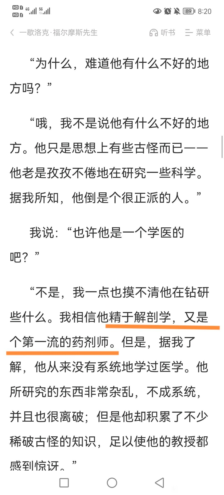
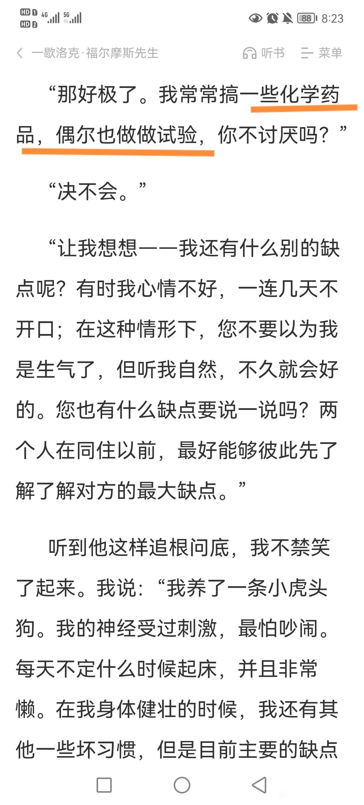
2.在华生的描述中，实际上福尔摩斯是个心思冷静而逻辑缜密的人，在没有案子的时候冷淡消极，但在探案的时候却又焕发出热烈的激情和全神贯注的认真，这个性格也被分别拆分给了柯哀，柯是积极但是自负的二分之一人格，而哀是冷静但是消极的二分之一人格，而他们对推理同样都感兴趣。
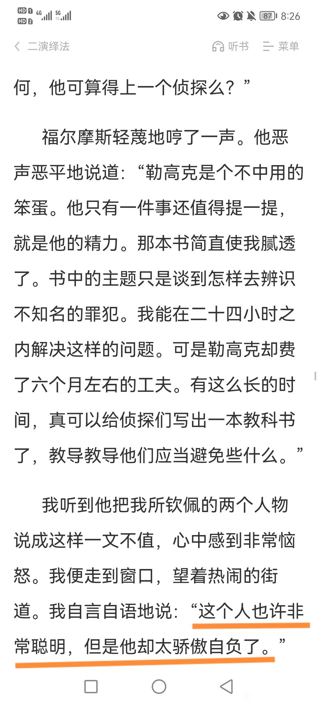
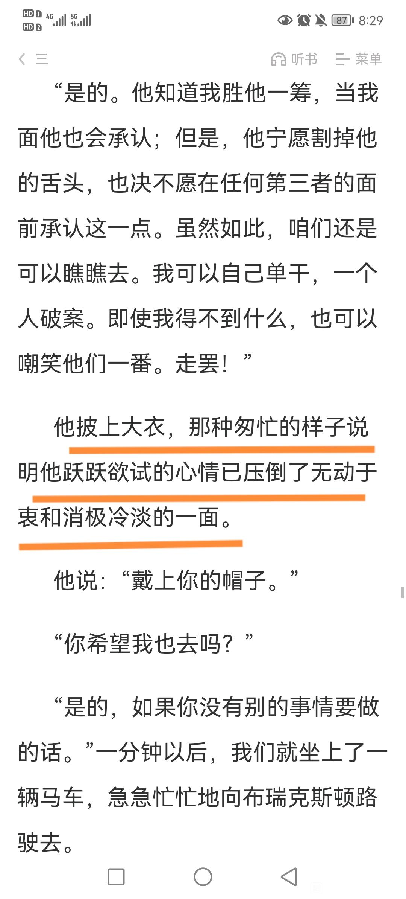
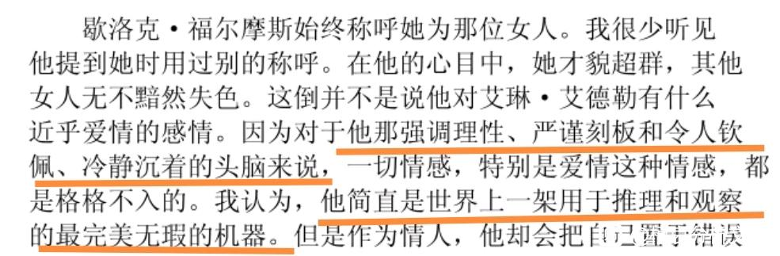
3.在文中，福尔摩斯多次描述自己或者被描述成追逐猎物的猎犬，拥有寻找线索痕迹和窥清犯罪的嗅觉，照应了柯哀之间的双鲨梗，哀认为自己是逃出深海的鲨鱼，而她拥有对来自深海杀意的敏感（雷达感应），柯认为自己是身处大海的鲨鱼，拥有对案件血腥味的敏锐嗅觉。（真正的第一集）
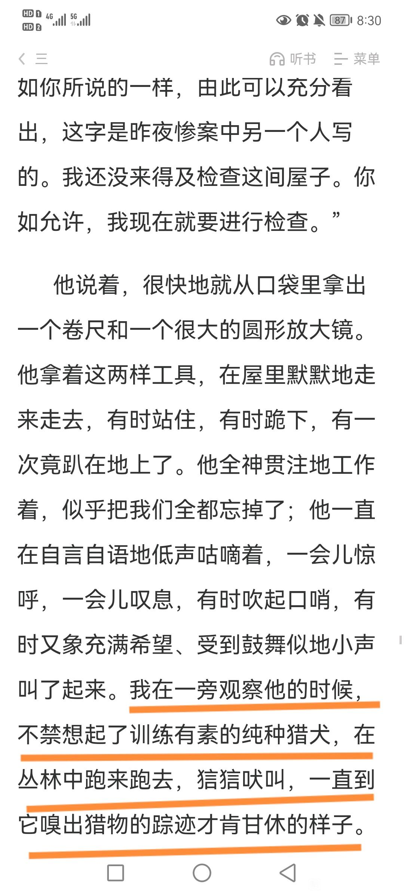
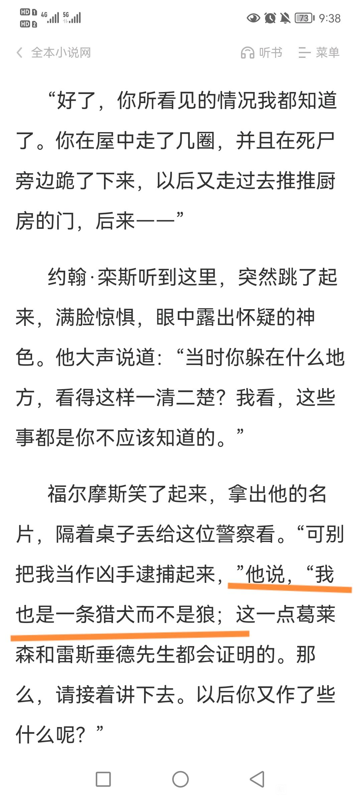
4.在文中，福尔摩斯有支得力助手——侦缉队贝克街分队，他亲口承认他们比伦敦的警察更加可靠机灵，容易寻找到线索。米花对应了贝克，所以少年侦探团实际上是照应了贝克街小分队的。不同的是，福尔摩斯一个人雇佣了这群小孩，而柯哀是共同带队并统率着少年侦探团。
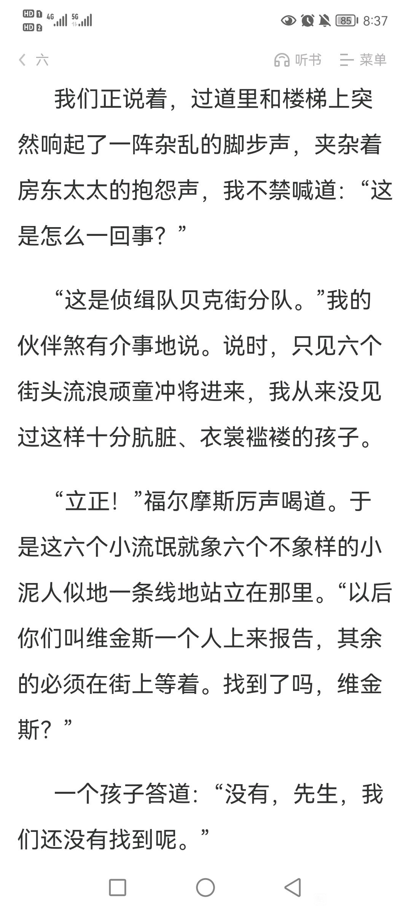
5.在再会篇我们得知了apex4869的另外一个称呼“未完成的名侦探”或者是“残缺的名侦探”，通行密码是福尔摩斯的曾用名雪林·福特，包括组织方面的人也会称呼药为名侦探。而柯哀是因为共同服下了这粒“未完成的名侦探”，并因为共同的命运才走到了一起。
2023-10-28 08:07 | crjiaqiz:一个人是未完成的名侦探，要两个人才是完整的名侦探！就像两块灵魂碎片，一直在寻找对方 (实在想不起出处了，只记得某个爱情故事就是讲前世本是一体的某个东西，比如镜子，像那个词 破镜重圆，碎成两半之后便永远在寻找另一半)
6.而在青山的笔下，对两人的“福的人格补全和融合”和在共同面对命运的进程中，柯从冒进鲁莽的自大的侦探（再会篇贸然跟踪组织导致哀受伤），慢慢被哀感染更考虑她的安全，行事更加严谨顾全大局（满月篇和列车篇柯导布大局，全都是围绕着保护哀），哀也慢慢被温馨的日常感化，从消极厌世的情绪中脱离，被阳光拉出了黑暗的深渊。他们都在逐渐走向对方，并且成为对方的一部分。

福艾的相互对应
1.福在遇见艾琳之前一直对女性的智慧嗤之以鼻，对应柯在哀转学过来的时候，他漫不经心的态度贯彻案件的始终，甚至对待送她放学的这件事的感受是烦躁，觉得“女孩子就是女孩子”，认为她们代表了麻烦，正是这样的轻敌导致了柯的疏忽，也让福尔摩斯在《波西米亚丑闻》中失手，在与艾琳的对弈中棋差一着。直到他们都遇到了自己的艾琳，才彻底改变了以往对女性的看法。
1.福在遇见艾琳之前一直对女性的智慧嗤之以鼻，对应柯在哀转学过来的时候，他漫不经心的态度贯彻案件的始终，甚至对待送她放学的这件事的感受是烦躁，觉得“女孩子就是女孩子”，认为她们代表了麻烦，正是这样的轻敌导致了柯的疏忽，也让福尔摩斯在《波西米亚丑闻》中失手，在与艾琳的对弈中棋差一着。直到他们都遇到了自己的艾琳，才彻底改变了以往对女性的看法。
2.在《波西米亚丑闻》中，华生强调了福尔摩斯对艾琳并不是“近乎爱情的情感”，对应了柯有明面上喜欢的女生，对哀“应该是不太可能”有爱情的主观感受的，虽然如此，福尔摩斯这样的人仍对爱情的态度是理性大于情感，（详见伦敦篇新一追妻名场面）。但是后面却转折了，道明没有任何哪个人能够用情感去扰乱他严谨的理论，只有一个人除外，而那个人就是艾琳。
整理一下下面这段话，其实它真正表明的是“只有一个女性对福尔摩斯细致的严谨的性格产生了强烈作用，掺入了一种强烈的情感扰乱了他的推理和他的冷静”，而这种情感到底是什么呢？也许就是青山想在柯对哀的情感里想探究的（详见m26）
整理一下下面这段话，其实它真正表明的是“只有一个女性对福尔摩斯细致的严谨的性格产生了强烈作用，掺入了一种强烈的情感扰乱了他的推理和他的冷静”，而这种情感到底是什么呢？也许就是青山想在柯对哀的情感里想探究的（详见m26）
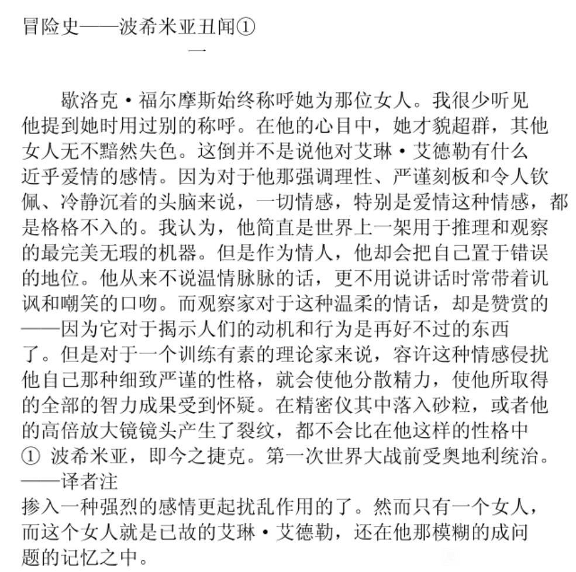
哀是更好的华生
说到这里，就不得不感叹青山对哀的亲女儿的待遇了，毕竟哀对于柯的定位是属于“另一半的福尔摩斯”+“艾琳”+“真正的华生”豪华三人组合。
说到这里，就不得不感叹青山对哀的亲女儿的待遇了，毕竟哀对于柯的定位是属于“另一半的福尔摩斯”+“艾琳”+“真正的华生”豪华三人组合。
重点的来咯
1.柯亲自并唯一钦定的探案“搭档”，对标福华之间真诚的情谊，华生非常情愿去担当福的助手，而福尔摩斯都会希望华跟随自己去探案。哀总会愿意提供柯南探案的各种助力，对柯南几乎是有求必应，包括但不限于跟他一起在现场行动，帮忙带孩子，帮忙报警和警察交流等。甚至会对柯南的行动起实质性的影响，因为相比较之下还是哀比较冷静理性一点，会劝阻、提醒、警示柯南。你要知道，前期喜欢乱来的柯，哀总是会帮他考虑后果、帮他兜底、和他一起收拾烂摊子，哀的存在几乎给予了柯最大的成长的底气。
1.柯亲自并唯一钦定的探案“搭档”，对标福华之间真诚的情谊，华生非常情愿去担当福的助手，而福尔摩斯都会希望华跟随自己去探案。哀总会愿意提供柯南探案的各种助力，对柯南几乎是有求必应，包括但不限于跟他一起在现场行动，帮忙带孩子，帮忙报警和警察交流等。甚至会对柯南的行动起实质性的影响，因为相比较之下还是哀比较冷静理性一点，会劝阻、提醒、警示柯南。你要知道，前期喜欢乱来的柯，哀总是会帮他考虑后果、帮他兜底、和他一起收拾烂摊子，哀的存在几乎给予了柯最大的成长的底气。
2.柯知道哀对他的推理抱有肯定和欣赏的态度。而要知道，华生对福的赞赏之词，会给福尔摩斯带来多大的满足，他不在乎外界会觉得他是个爱钻研爱推理的怪人（某人），但是他会因为你的真诚的欣赏而开心很久。尽管新一名誉侦探界，但是你很少能够找到能够肯定他的推理理想的人，大家都对他仰慕，不过是对他能力的倾慕而已，并不能站在同水平的角度看待他。而你们试想哀会拿什么来形容柯南？在哀心里柯南是什么形象？她早就比所有人更看得出来，柯南就是推理比所有人都出色的大侦探，所以才会时不时地拿“大侦探也会”“大侦探也解不出来”调侃他，柯很容易就知道在她的心里——他就是她心中的福尔摩斯，他就是她心中的名侦探。所以为什么柯有时候更喜欢，并且这个倾向越来越暴露和明显，想跟哀待在一起，是有理由的，因为你聊案件她会参与，你聊什么她都会在意，而不是连聊你最喜欢的福尔摩斯对方都没有话去接你（某人）。柯就是陷入想要取得这个女孩的在意和被需要感，越陷越深。
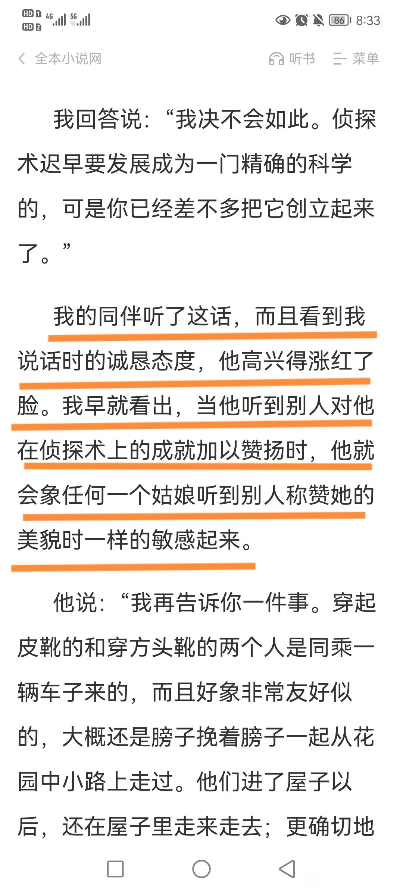
3.青山实际上是从两种方向刻画了福尔摩斯孤僻的化身，以及巧妙交织的人物成长。新一是身边没有同水平的人能够交流，而志保是孤身一人在陌生的国度，这实际上让两人各自向外倾和内倾的方向上发展自己，一个大呼大喊地想让懂自己的人注意自己，一个小心翼翼地走每一步而保护自己与家人。当两个人意外地因为身体变小而形成同盟，从此命运的齿轮开始转动。男孩以光的姿态撕裂开黑暗的裂缝，挺身而出保护女孩，女孩则倾听他所有的秘密，回应他所有的需求，哀回归到向外的成长，有足够的爱和勇气去蜕壳成长，柯补全了向内的生长，有足够的爱和关注去滋养灵魂，代表着福华的两个人都是彼此的救赎。
4.关于称呼的一个小设计，因为福尔摩斯和华生喊对方都习惯了喊姓（他们的名字分别是夏洛特和约翰），柯哀之间也是互称姓氏的（如柯南的嗨巴拉，和灰原叫他江户川或者工藤）。青山为了反衬这一点，还特地画了一章小新一模仿福尔摩斯想把兰当成华生，反而被要求改叫名字的场景。话说兰只有笨蛋这一属性能够对应华生，相似度支撑点都不好拿来说啊。
5.如果说名侦登场的人物中，有一个人很喜欢暗中观察柯南，那答案可能就脱口而出了——哀。那么从初登场开始，就开始了对福尔摩斯的观察的人是谁呢？华生。他对福尔摩斯的人格总是在孜孜不倦地深究，不得不说，华对福的观察几乎是清晰而极致，而且他无时无刻都在偷偷观察福尔摩斯的反应、神情等细节，像极了偷瞄小柯的哀，而她对柯性格的了解得多么剔透和深入（古堡篇，干净的气味），大家都了然于胸。当然，福对华的观察和感触则有意地被青山藏起来了（如柯从狼崽怒吼到下一篇竞技场就直接拉手手了，月台追妻，蘑菇山熊等篇，证人保护计划追到医院去，很多很多柯对哀的态度全部都在留白，这部分算是这段感情需要分析的重很重要的点了）

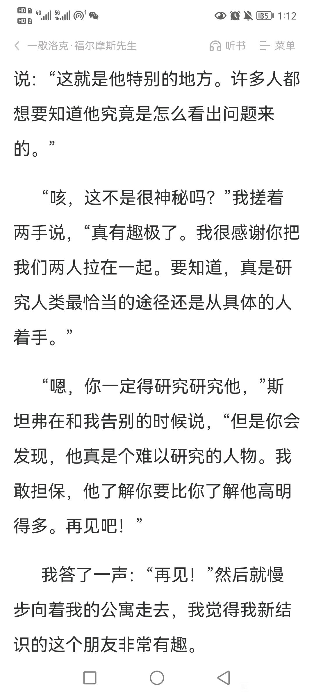
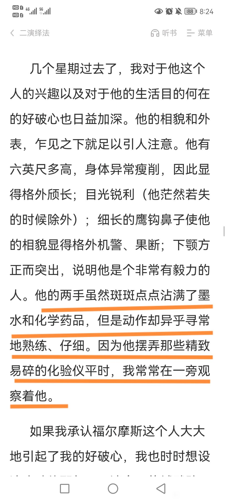
全文完
关于楼主总结的第五点，aptx4869是“未完成的名侦探”这点，我觉得a药是双色胶囊这个设定本身也在暗示二分之一论。因为a药是现实不存在药物，所以它的外貌设计可以超脱药理学的范畴，是一个作者纯粹的概念性logo一样的存在。在此之上，选用药片或者药丸这种“一个整体”的“完美”结构其实在视觉上更容易集中，也就是更容易让读者意识到这个药的超脱之处。但是青山却用了一分为二的胶囊状，且是双色的，从视觉上就弱化了“整”的概念，所以我觉得这里设定就是在暗示二分之一论。（顺便发散一下，红白配色 红是红方 白是银弹）